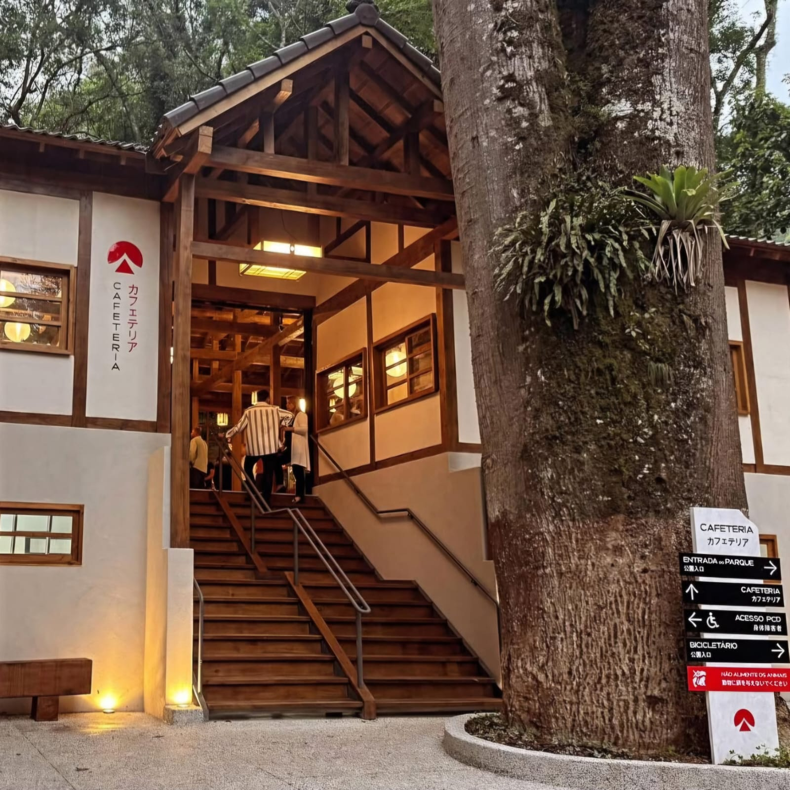

Poços de Caldas, o charmoso refúgio vulcânico no sul de Minas Gerais, equilibra com maestria a elegância de seu passado histórico com o calor da hospitalidade mineira. De imponentes salões de antigos cassinos a tradicionais bancas de doces cristalizados e queijos artesanais, a cidade oferece uma experiência completa de bem-estar e sabor. Aqui, exploramos suas famosas águas termais e descobrimos os encantos que tornam este destino um clássico inesquecível entre as montanhas.
As atrações de Poços de Caldas variam de imponentes mirantes no topo da serra a relaxantes estâncias hidrominerais repletas de história. Esta cidade vulcânica oferece experiências memoráveis durante todo o ano — as famílias podem se aventurar em passeios de teleférico, os entusiastas da história podem explorar o legado dos tempos dos cassinos e os amantes da natureza encontram refúgio em jardins orientais e trilhas na mata. A arquitetura neoclássica que adorna o centro da cidade cria um contraste fascinante com a natureza exuberante ao redor, garantindo cenários que irão encantar qualquer visitante.
O Recanto Japonês é um verdadeiro refúgio de paz e cultura oriental harmonizado com a natureza da Serra de São Domingos. Com sua arquitetura típica, lagos com carpas, jardins cuidadosamente planejados e a tradicional Casa de Chá, o local oferece um cenário encantador e tranquilo. É o passeio ideal para quem busca momentos de contemplação, contato com o verde e belíssimas fotografias em um ambiente que transporta o visitante diretamente para o Japão.
Bom para:
Localizado no topo da Serra de São Domingos, o Cristo Redentor é o cartão-postal que oferece a vista panorâmica mais impressionante de Poços de Caldas. Acessível por uma estrada cercada de mata ou pelo famoso passeio de teleférico, o monumento de 30 metros de altura proporciona um ângulo privilegiado de toda a cidade, especialmente durante o pôr do sol. É uma parada obrigatória para entender a geografia local e admirar a grandiosidade da região vista de cima.
Bom para:
O Palace Hotel é um ícone histórico de luxo e sofisticação, remetendo aos tempos áureos dos cassinos e do termalismo no Brasil. Imponente no coração da cidade, junto ao Parque José Affonso Junqueira, sua arquitetura neoclássica e seus salões majestosos preservam o glamour da década de 1930. Mais do que uma hospedagem, o edifício é um monumento vivo que convida o turista a viajar no tempo e apreciar a elegância que moldou a identidade turística de Poços.
Bom para: